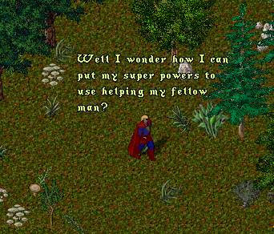
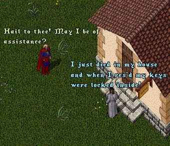
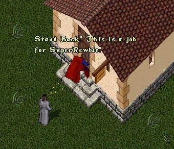
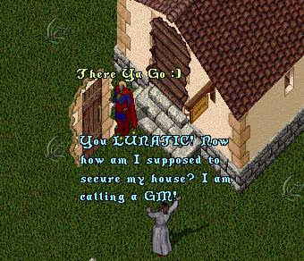
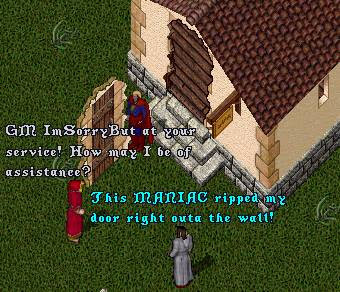
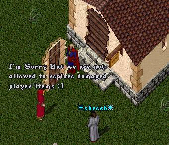
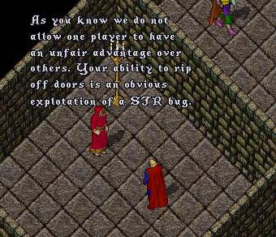
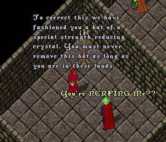
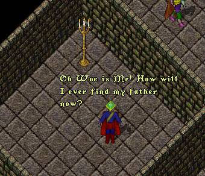

Episode 89: Son of ImaNewbie - Part Three. Ok! Enough about the "Clean Up Britannia" campaign, back to my story about SuperNewbie's discovery of his super powers and his search for his father, ImaNewbie, now languishing in jail. As this episode opens we find SuperNewbie heading through the woods when he comes upon a citizen in need of help. If you haven't read the beginning of this series better head to episodes #86 and #87 first.




The distraught citizen, upset about his door, pages a GM
and, in an instant, a GM arrives to help with the problem
(well, I told you this was a fairy tale).


Before you know it SuperNewbie finds himself in Jail
receiving a lecture from GM ImSorryBut.


